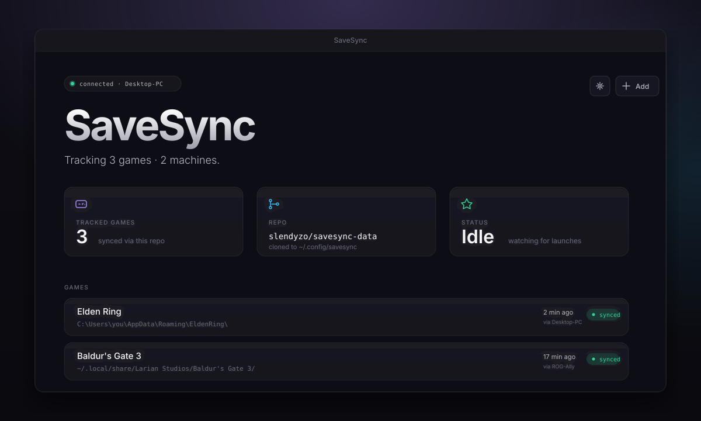

A portable desktop app that syncs your saves across devices using your own private git repo. Steam, repacked, GOG, Epic, itch — all welcome.

SaveSync lives in your system tray, watches for game launches, and syncs your saves to a private repo on your GitHub. Switch machines and your save is already there.
Device-flow auth — type an 8-character code, approve in your browser, done. PAT fallback for Forgejo / Gitea / GitLab.
SaveSync creates a private savesync-data on your account — or point at one you already have.
Steam library scan finds installed games with known save paths. ~13,000 games supported via the bundled Ludusavi manifest.
Play offline on the ROG Ally while your PC has unsynced progress? Both sides get pushed to your repo. Newer save wins; the older one is preserved on a backup branch you can always roll back to.
SaveSync is brand new and the roadmap is open. Drop your email if you want occasional updates (≤1 per month), or open an issue on GitHub with the feature you want.
No mailing list yet — submissions open the GitHub issue tracker. v2 will swap in a proper opt-in.
Portable binaries — no installer, no admin rights. Drop the file anywhere you can execute things.
Grab SaveSync-setup.exe from the latest release. SmartScreen click-through until our SignPath signing approval lands.
chmod +x, double-click. Works on Bazzite, SteamOS, Ubuntu, Fedora, anywhere with webkit2gtk-4.1.
Every release auto-updates the installed version on next launch. No package manager required.